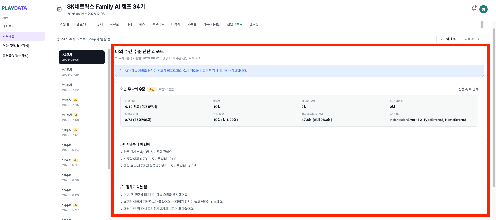
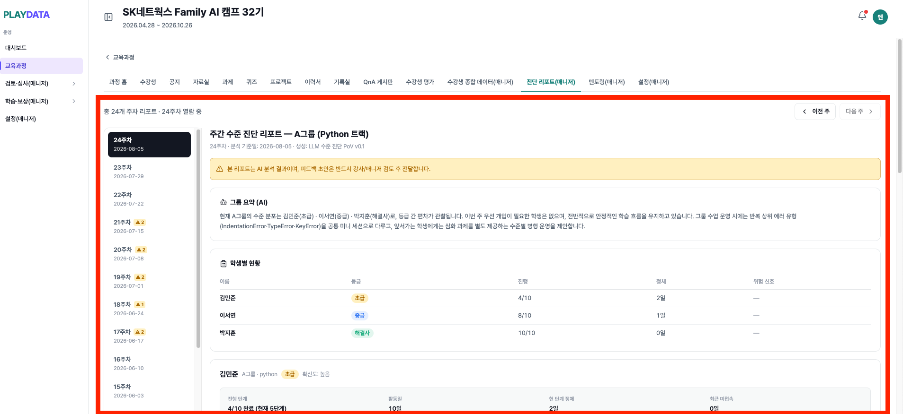

08.11 킥오프 회의 자료
정부지원 AI 활용 교육 사업(GOV-AI-Agent)과 LMS 역량증명서를 어떻게 하나로 잇는지에 대한 우리 측 안입니다.
실습 과정에서 쌓이는 학습 데이터를 LMS로 가져와, 수강생이 과정을 밟는 동안 자기 성장을 확인하고 수료 시 증명서가 그 과정까지 담게 하는 것이 목표입니다.
지금 수강생이 받는 것은 수료 시점의 증명서 한 장입니다. 과정을 밟는 동안에는 자기가 어디까지 왔는지, 무엇이 늘고 무엇이 부족한지 확인할 방법이 마땅치 않습니다. 통합 이후에는 교육과정 안에서 일자별 · 기술별로 쌓인 학습 이력을 열어 보고, 남은 기간에 무엇을 더 해야 하는지 스스로 판단할 수 있게 됩니다.
| 시스템 | 역할 |
|---|---|
| LMS |
|
| GOV |
|


실습 활동 원천을 일자별로 적재해 개인별 리포트를 하루 한 번 생성하고, LMS 가 주 단위로 통합한 뒤 강사 · 매니저 승인을 거쳐 수강생에게 알림으로 전달합니다.
GOV-AI-DATARAKE/{YYYY-MM-DD}/json 에 적재
계약 ②
GOV-AI-REPORT/{수강생 고유 번호}/{YYYY-MM-DD}/report 로 적재
계약 ③
적재된 리포트를 주 단위로 모아 통합 · 분석하고, 강사 · 매니저 승인을 거쳐 수강생에게 공개합니다. 지금의 증명서가 “수료 시점의 한 장”이라면, 이것은 “거기까지 온 경로”입니다.
주간 데이터 조회
수강생 고유 번호 경로에서 주 1회, 해당 주간 리포트 수신
LMS통합 · 분석
주간 AI Report 보고서로 통합하고 카드가 쓸 형태로 분석
LMS검토 · 승인
강사 · 매니저가 수강생별 리포트 확인 후 승인 · 반려
LMS공개
승인된 리포트만 교육과정 탭 카드로 노출
LMS두 시스템을 나란히 놓고 데이터가 어디서 어디로 흐르는지를 화살표로 그렸습니다. 회색 화살표가 데이터 흐름이고, 주황이 두 시스템이 만나는 계약 네 건입니다.
통합 서비스 아키텍처
학습 발생 → 수집 · 분석 → 리포트 발행 → 적재 · 가공 → 검토 · 승인 → 공개 · 증명
상호 계약은 총 4건입니다. 양 측 개발 진행 상황에 따라 1~4 계약의 개발 주체가 변동될 수 있다고 판단하여 4단계로 나누었습니다.
ATmux · VS Code 확장(PlayLang) 이용 시 LMS 로그인 API로 인증하도록 개선해 주세요.
로그인 응답의 user.id(UUID)가 이후 모든 데이터의 기준 식별자,
곧 경로 규약의 {수강생 고유 번호} 가 됩니다.
현재 수강생을 특정할 방법이 없는 상태라, 이것이 없으면 계약 3의 경로 규약이 성립하지 않습니다.
아래는 이미 배포되어 동작 중인 API입니다.
응답은 모두 { data: … } 로 감싸여 있습니다.
| 엔드포인트 | 요청 | 응답 |
|---|---|---|
POST /auth/login |
{ userId, password } |
token(access) · accessTokenExpiresAt · user · nextRouterefresh token 은 HttpOnly 쿠키로 내려갑니다 |
POST /auth/refresh |
refresh token 쿠키 | access token 재발급 + refresh token 회전 |
GET /auth/me |
Authorization: Bearer <token> |
현재 사용자 정보 — 세션 유효성 확인용 |
POST /auth/logout |
refresh token 쿠키 | 토큰 폐기 |
| 필드 | 값 | 이벤트에 실을 항목 |
|---|---|---|
user.id |
사용자 고유번호(UUID) | lms_student_uuid 로 사용 — 계약의 기준 식별자이자 경로의 {수강생 고유 번호} |
user.studentUuid |
수강생 로그인 ID (수강생 역할일 때만 채워짐) | 보조 확인용. 기준 식별자로 쓰지 않습니다 |
user.role |
역할 | 수강생이 아닌 계정의 실습 데이터를 걸러내는 용도 |
user.cohortIds |
소속 기수 UUID 목록 | 기수 단위 집계에 사용. 기수 번호는 별도 조회가 필요합니다 |
user.name |
이름 | 리포트 표시용 |
붙일 때 확인해야 할 두 가지
① refresh token 이 HttpOnly 쿠키입니다. 브라우저를 전제로 만든 방식이라, VSCode 확장이나 터미널 앱처럼 브라우저가 아닌 클라이언트에서는 쿠키를 직접 보관·재전송하는 처리가 필요합니다. 그것이 어려우면 비브라우저 클라이언트용 토큰 발급 방식을 우리 쪽에서 추가하는 것으로 협의합니다.
② 식별자는 user.id 하나로 고정합니다.
studentUuid 는 이름과 달리 로그인 ID이고 수강생 역할에서만 채워집니다.
두 값을 섞어 쓰면 나중에 어느 쪽 기준으로 쌓인 데이터인지 구분할 수 없게 됩니다.
수집한 원천 데이터를 분석 전에 S3에 쌓아 주세요. 나중에 같은 값이 다시 나오는지 검증하거나 재분석할 때 근거가 됩니다.
GOV-AI-DATARAKE/{YYYY-MM-DD}/json| 항목 | 확인할 내용 |
|---|---|
| 담기는 범위 | 실습 이벤트 원본인지 정제 후인지, 가명화 전인지 후인지 — 개인정보 동의 범위와 직결됩니다 |
| 수강생 구분 | 날짜 단위 묶음이라 경로에 수강생 구분이 없습니다 — 개별 조회가 필요하면 경로 조정을 협의 |
| 적재 시각 | 실시간인지 일 1회 묶음인지 |
일자별 분석 리포트를 아래 경로 규약으로 S3에 저장해 주세요. 수강생 고유 번호가 경로 첫 단이라 LMS가 학생 단위로 바로 조회할 수 있고, 날짜 파티션 덕분에 LMS 가 주 단위로 해당 주간 리포트만 모아 조회할 수 있습니다.
GOV-AI-REPORT/{수강생 고유 번호}/{YYYY-MM-DD}/report| 경로 요소 | 값 | 비고 |
|---|---|---|
GOV-AI-REPORT |
고정 프리픽스 | 원천 데이터와 섞이지 않게 최상위에서 구분 |
수강생 고유 번호 |
로그인 응답의 user.id (UUID) |
계약 1의 결과물 — 다른 식별자를 쓰지 않습니다 |
YYYY-MM-DD |
집계 기준일 | KST(+09:00) 기준으로 통일 |
report |
일자별 리포트 파일 | 형식은 JSON 제안 — 지표 · 판정 · 근거 필드 구성은 협의 |
| 항목 | 확인할 내용 |
|---|---|
| 버킷 소유 · 권한 | 어느 쪽 계정의 버킷인지, 상대에게 줄 쓰기 권한(IAM)의 범위 |
| 리포트 스키마 | 파일 안에 어떤 항목이 담기는지 — 지표 · 수준 판정 · 취약 패턴 등. 필드를 따로 요구하지 않고, 리포트에 담겨 오는 것을 그대로 씁니다 |
| 적재 시각 | 일 1회 기준 몇 시에 도착하는지 — LMS 는 주 1회 모아서 조회하므로, 주간 마감 시각도 함께 확인합니다 |
| 재적재 정책 | 같은 날짜를 다시 올릴 때 덮어쓰는지 — 증명서 증적은 소급 변경되면 깨집니다 |
| 개인정보 동의 | 동의 문안에 “역량증명서 발급 목적의 활용”이 포함되는지 |
강사 · 매니저가 검토 단계에서 승인하지 않은 리포트를 다시 생성할 수 있도록 API를 열어 주세요. LMS 검토 화면에서 바로 호출합니다. 이것이 없으면 잘못 생성된 리포트를 되돌릴 방법이 없어, 매니저가 직접 수정하는 수밖에 없습니다.
| 항목 | 요청 내용 |
|---|---|
| 호출 단위 | 수강생 개별과 여러 수강생 지정을 모두 지원해 주세요 — 한 명만 다시 만드는 경우와, 특정 기수 · 특정 날짜를 묶어 다시 만드는 경우가 모두 생깁니다 |
| 요청 파라미터 |
수강생 고유 번호(계약 1의 user.id) 목록과 대상 날짜.
사유를 함께 보낼 수 있으면 재생성 이력 추적에 씁니다
|
| 결과 반영 | 재생성된 리포트를 계약 3과 같은 S3 경로에 올려 주세요. 덮어쓸지 버전을 남길지는 협의 — 증명서 증적과 직결됩니다 |
| 완료 통지 | 동기 응답인지, 접수만 받고 나중에 올리는 비동기인지 확인이 필요합니다. 비동기라면 완료 시점을 우리가 아는 방법(콜백 · 상태 조회)이 함께 있어야 합니다 |
| 인증 | API 키 방식과 호출 주체 식별 방법 — LMS 서버에서만 호출합니다 |
경계는 단순합니다 — 학습 과정 데이터를 만드는 쪽과, 그것을 평가·인증·증명으로 바꾸는 쪽이 서로 다른 일을 합니다. 우리가 정의해 건네는 것은 학생 식별자 하나이고, 분석 산출물은 리포트에 담겨 오는 것을 그대로 씁니다 — 항목을 따로 협의해 받지 않습니다.
| 영역 | LMS (우리) | GOV-AI | 비고 |
|---|---|---|---|
| 학생 식별자 규약 | 정의·제공 | 적용 | 증명서가 최종 소비처이므로 |
| 실습 환경 (조교·터미널) | — | 개발·운영 | 우리가 만들 이유가 없음 |
| 원천 이벤트 수집 | — | 개발·운영 | 제안서 1단계 범위 |
| LLM 수준 판정·취약점 | 소비 | 산출 | 판정 결과는 근거로만 사용 |
| 증명서 점수 산정 | 단독 | — | 재현 가능해야 하는 확정 함수 |
| 역량 히스토리 화면 | 개발 | 데이터 제공 | 교육과정 허브 탭 신설 |
| 리포트 파이프라인 | 개발 | — | S3 리포트 조회 · 전처리 → 역량 히스토리 카드 데이터로 변환 |
| 리포트 검토 · 승인 | 개발 · 운영 | — | 강사 · 매니저가 LMS 안에서 승인 — 승인 전에는 수강생에게 보이지 않음 |
| 데이터 계약 관리 | 주관 | 협의 | 버전·변경 이력 관리 |
| 개인정보 동의 문안 | 협의 | 협의 | 증명서 활용 목적 포함 여부 |
GOV-AI 로드맵상 9월 중순은 2단계 중반이라 완성된 시스템을 전제할 수 없습니다. 시연 가능한 것은 “연동이 성립함을 보이는 최소 경로”입니다. 욕심을 내면 양쪽 다 미완인 채로 보여주게 됩니다.
| 구분 | 항목 | 이유 |
|---|---|---|
| 포함 | 나의 역량 히스토리 — 교육과정 탭 1개 | 우리 LMS 데이터만으로도 시간축이 서고, 실습 이벤트가 붙으면 밀도가 올라가는 것을 그 자리에서 보여줄 수 있음 |
| 포함 | 리포트 S3 적재 1경로 | GOV-AI-REPORT/수강생 고유 번호/YYYY-MM-DD/report 규약으로 일자별 적재. 연동이 실제로 붙었음을 증명하는 최소 단위 |
| 포함 | 리포트 파이프라인 구축 | 적재된 리포트를 조회 · 전처리해 역량 히스토리 카드 데이터로 변환. 적재와 화면을 잇는 다리로, 이것이 없으면 히스토리 탭이 리포트를 쓰지 못함 |
| 포함 | 리포트 검토 · 승인 화면 | 강사 · 매니저가 수강생별 리포트를 확인하고 승인. 승인된 것만 수강생에게 공개되므로, 이 화면이 없으면 히스토리를 열 수 없음 |